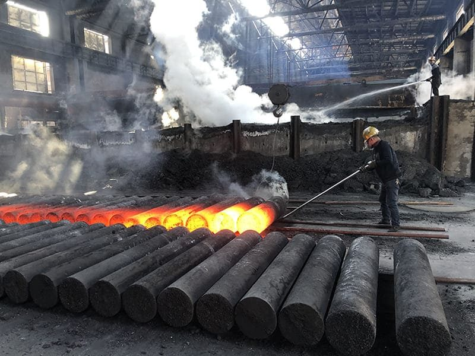
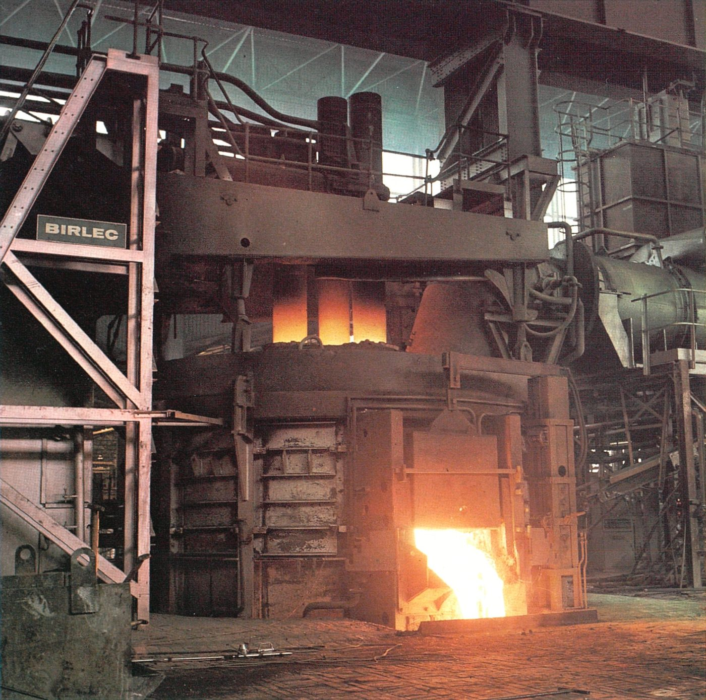
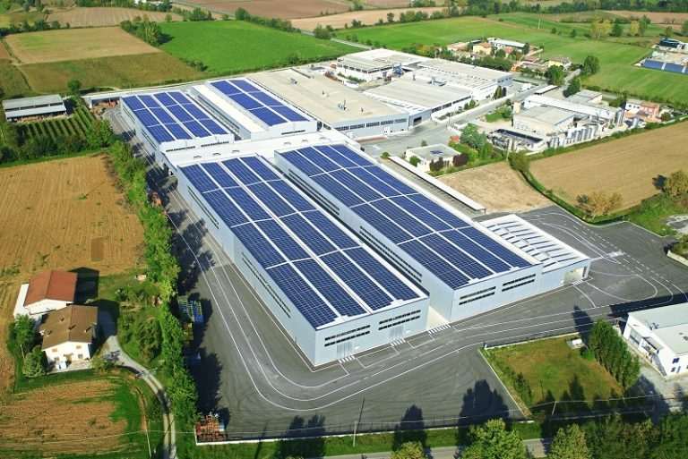
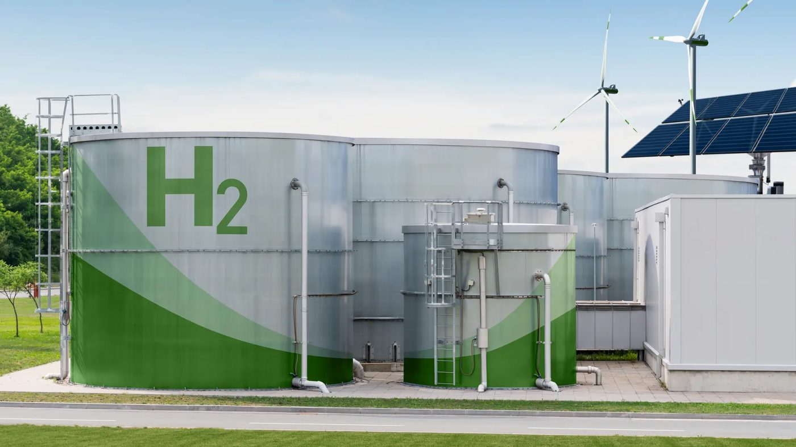
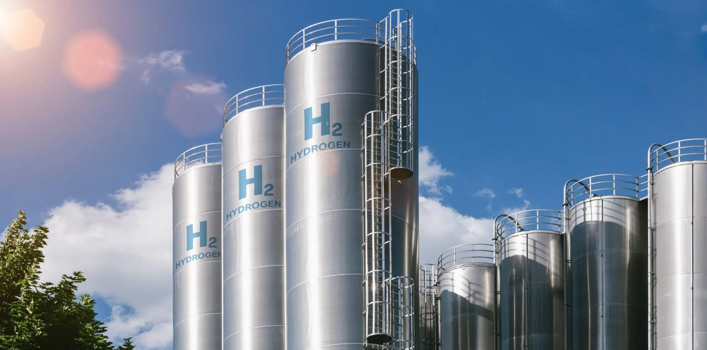

Dalla grafite all'eccellenza verde: il percorso di un'industria pesante verso la neutralità carbonica.
Sangraf Italy S.r.l. fa parte del Gruppo Sanergy ed è una realtà industriale di primo piano nel panorama metallurgico europeo. Ha rilevato nel 2017 lo storico sito produttivo di Narni, rilanciandolo come polo d'eccellenza.
Lo stabilimento ha sede a Narni Scalo, in provincia di Terni, all'interno di un distretto industriale storico. La sua posizione nel cuore dell'Umbria la rende punto di riferimento per l'economia del territorio ternano-narnese.
L'azienda produce elettrodi di grafite ad altissima potenza (UHP), componenti indispensabili per i forni ad arco elettrico (EAF), la tecnologia più pulita disponibile per la fusione dell'acciaio su scala industriale.
Sangraf Italy è l'unico produttore italiano di elettrodi di grafite e uno dei pochi rimasti in Europa. È inoltre impegnata nel progetto innovativo "Sanode" per la produzione di grafite sintetica destinata agli anodi delle batterie al litio, posizionandosi come attore chiave nella filiera della mobilità elettrica.


L'impronta ecologica di Sangraf è strettamente legata al processo di grafitizzazione: il riscaldamento di materiali carboniosi fino a 3 100 °C trasforma il carbonio amorfo in una struttura cristallina ordinata, ma comporta una sfida energetica e ambientale significativa.
I forni Acheson e LWG sono macchinari ad altissima intensità elettrica. Il consumo specifico per unità di prodotto varia tra 7 500 e 12 000 kWh per tonnellata di grafite.
12 000kWh / tonnellata (picco)I forni di cottura a gas naturale generano emissioni dirette di CO₂. La combustione del metano è necessaria per i cicli termici di preparazione degli elettrodi prima della grafitizzazione finale.
Scope 1emissioni dirette da combustioneLe fasi di lavorazione meccanica (tornitura, fresatura) generano polveri sottili. Se non gestite, impattano sulla qualità dell'aria locale e rappresentano una perdita di materia prima preziosa.
PMparticolato fine da lavorazione| Vettore | Fonte | Scope GHG | Criticità |
|---|---|---|---|
| Energia elettrica | Forni Acheson / LWG | Scope 2 | ●●● Alta |
| Gas naturale | Forni di cottura | Scope 1 | ●●● Alta |
| Polveri di grafite | Lavorazione meccanica | Scope 1 | ●● Media |
Sostituzione di oltre 1 000 punti luce tradizionali con moderni corpi illuminanti LED. Risparmio netto di 433 000 kWh/anno, pari all'eliminazione di 152 t di CO₂ annue — il primo passo tangibile verso la decarbonizzazione.
−152 t CO₂ / annoEntrata in funzione del sistema solare sui tetti dello stabilimento. Produce 1 580 400 kWh/anno di energia pulita destinata all'autoconsumo industriale, con una riduzione di 840 t di CO₂ l'anno — un progresso del +400% rispetto al 2020.
−840 t CO₂ / annoL'impegno ambientale è convalidato da certificazioni di terze parti: la ISO 14001 per il sistema di gestione ambientale e la EPD (Dichiarazione Ambientale di Prodotto), che garantisce trasparenza sui dati di impatto dei prodotti.
Certificato
Tre assi strategici compongono il piano: il recupero del calore di scarto, la decarbonizzazione dei combustibili e la circolarità delle materie. Insieme puntano a ridurre l'impronta residua di un ulteriore 30%.
L'enorme quantità di energia termica sprigionata dai forni a 3 000 °C viene in gran parte dissipata nell'ambiente durante le fasi di raffreddamento, che possono durare diversi giorni.
Installazione di scambiatori di calore fumi-aria per catturare l'energia residua. Il calore sarà reintrodotto nel ciclo per il preriscaldamento dei forni di cottura o per il teleriscaldamento degli uffici.
La fase di cottura degli elettrodi dipende ancora dal gas metano, una fonte fossile che genera emissioni ineliminabili con i bruciatori tradizionali.
Conversione dei bruciatori in sistemi Hydrogen-Ready, capaci di utilizzare idrogeno verde prodotto tramite elettrolisi, sfruttando i 7,4 M€ di fondi PNRR già intercettati per la ricerca sull'idrogeno a Narni.
Le lavorazioni meccaniche e gli sfridi di produzione generano ogni anno tonnellate di residui grafitici che, se non recuperati, confluiscono nel flusso dei rifiuti industriali.
Centro di recupero interno per la polverizzazione e ri-mattonellazione degli scarti. La grafite riciclata viene reimmessa nel mix di materie prime, chiudendo il ciclo secondo i principi della simbiosi industriale.


L'implementazione sinergica degli interventi mira a ridurre l'impronta di carbonio residua di un ulteriore 30%, proiettando Sangraf Italy verso la Carbon Neutrality entro il prossimo decennio.
Riducendo emissioni e consumi, Sangraf rafforza il distretto TURN, contribuendo alla rigenerazione di Terni e Narni. Un'industria più pulita garantisce un territorio più salubre e maggiore competitività per l'intero indotto siderurgico umbro.
Con il progetto Sanode per le batterie al litio e i fondi PNRR per l'idrogeno verde, Sangraf non è solo un produttore di elettrodi: è un attore chiave nella transizione energetica europea.
"La sostenibilità non è un limite, ma il motore di una nuova era industriale. A Narni, il futuro è già iniziato."